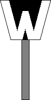

(1) Bedeutung
Auftrag des Wärters zur Rangierfahrt abwarten.
Signalbuch-Online
Signal Ra 11 (DS 301) / Ra 11a (DV 301) / Ra 11b (DV 301)
Wartezeichen
Informationen und Vorschriften zu den Wartezeichen im Bahnbetrieb.
(2) Beschreibung
Signal Ra 11 (DS 301), Signal Ra 11a (DV 301):
Ein gelbes W mit schwarzem Rand.
(3)
Signal Ra 11b (DV 301):
Ein weißes W mit schwarzem Rand.

(4) Zustimmung zur Vorbeifahrt am Signal Ra 11, Ra 11a und Ra 11b
Die Zustimmung wird gegeben:
Bevor mit der Spitze einer Rangierfahrt am Wartezeichen vorbei gefahren werden darf muss der Weichenwärter eine Zustimmung gegeben haben.
Die Zustimmung wird gegeben:
(a) Beim Signal Ra 11 (DS 301) durch Lichtsignal Sh 1 (DS 301).
(b) Beim Signal Ra 11 (DS 301) und Signal Ra 11b (DV 301) mündlich oder durch hochhalten eines Armes oder einer weiß leuchtenden Handleuchte.
(c) Beim Signal Ra 11a (DV 301) durch das Signal Ra 12 (DV 301).
(5)
Das Signal Ra 11a (DV 301) wird nur in Verbindung mit dem Signal Ra 12 (DV 301) angewandt. Das Signal Ra 11b (DV 301) wird alleinstehend sowie an Drehscheiben und Schiebebühnen, und zwar stets ohne das Signal Ra 12 (DV 301) angewandt. Das Signal Ra 11b an Drehscheiben und Schiebebühnen zeigt an, dass diese von Fahrzeugen erst befahren oder verlassen werden dürfen, wenn der Wärter die Zustimmung gibt.
(6) Beleuchtung
Das Signal kann bei Dunkelheit beleuchtet sein.